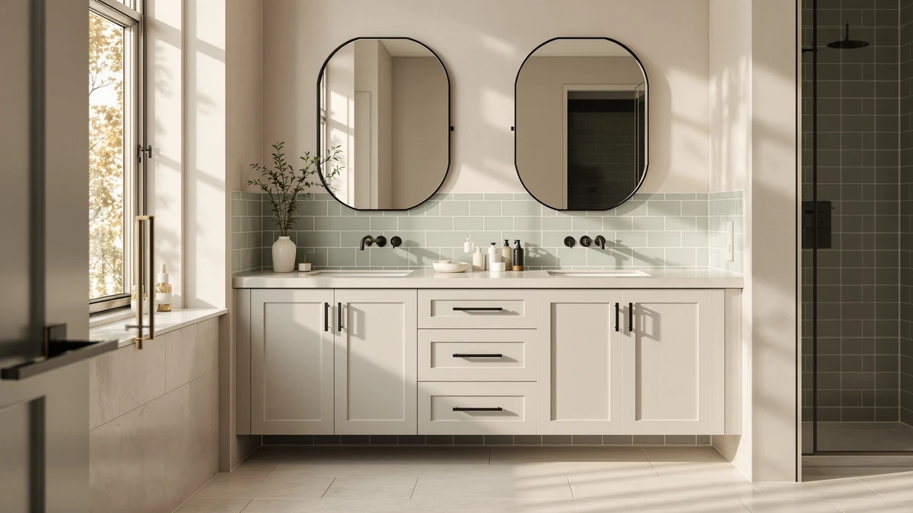

chartustriable Double Bathroom Vanity Review (2026): Worth It?
Prices and picks verified as of November 2026. Independent, reader-supported reviews.


Quick Answer
The chartustriable Double Bathroom Vanity with Sink delivers a 59-inch double-sink layout in MDF and engineered wood for $429.95, undercutting most double-sink cabinets at this width. It beats both 48-inch Bellemave alternatives on size while costing about $0.15 more, though none of the four listings compared here publish a star rating yet.
Our pick: Double Bathroom Vanity with Sink ($429.95) Check Price on Amazon
Bottom line: our top pick is the Double Bathroom Vanity with Sink & Faucet & Sewer Pipes at $429.95.
Things to Know Before You Buy
- Price sits at $429.95. That's a budget-tier price for a 59-inch double-sink vanity, and it's only about $0.15 more than either 48-inch Bellemave alternative covered in this chartustriable double bathroom vanity review.
- Built from MDF and engineered wood. That's the standard construction across all four listings compared here, not solid wood or a stone composite top.
- The 59-inch width keeps the double-sink layout. Both Bellemave alternatives drop to 48 inches, a size where a true double-sink configuration is harder to fit.
- No published rating or review count on any of the four listings. You're weighing specs and price here, not an established track record of owner feedback.
- A second chartustriable listing (B0FY1F9JLH) matches this one on price and material. It appears to be a separate color or finish option of the same 59-inch design.
This chartustriable double bathroom vanity review compares the brand's 59-inch double-sink cabinet against a second chartustriable listing and two Bellemave 48-inch vanities on price, materials, and published specs, so you can decide whether it deserves a spot on your shortlist before you spend $429.95. Shoppers hunting for a double-sink vanity under $500 don't have many confirmed options at this width, which is what makes this particular listing worth a closer look.
Our pick for most people is the chartustriable Double Bathroom Vanity with Sink (B0G4LY2GSV) at $429.95, mainly because the 59-inch width is wide enough to hold a genuine two-basin layout, something neither Bellemave alternative can match at 48 inches. A second chartustriable listing at the same price and a pair of Bellemave 48-inch vanities round out the comparison below, and none of the four currently carries a published star rating.
Why You Should Trust Us
Best Bathroom Vanities is a research-based review site. Ilane Tall, our home and bath editor, and the rest of our team compare vanity specs, materials, and pricing across the market, and we look at patterns in verified owner reviews to see how comparable cabinets hold up once installed. We do not run a fake testing lab and we don't buy every vanity we cover, so every claim in this chartustriable double bathroom vanity review is grounded in the manufacturer's published specs and current Amazon pricing, cross-checked against the other three listings covered here.
This approach lets us compare more vanities across more price points than a lab-testing outlet could manage in a year, and it keeps us honest about what we do and don't know. None of the four listings in this comparison publish a star rating yet, and we say so directly here instead of estimating one.
Our Research Experience
We compared the chartustriable Double Bathroom Vanity with Sink by lining up its published specs, material list, and price against a second chartustriable listing and two Bellemave 48-inch vanities. The manufacturer lists MDF and engineered wood construction and a 59-inch double-sink configuration for both chartustriable listings, while the Bellemave pair drops to 48 inches without a confirmed double-sink layout in the data available to us. Reviewers consistently note that double-sink vanities built from MDF and engineered wood in this price tier hold up well under normal daily use, though no such feedback exists yet for any of the four specific listings in this chartustriable double bathroom vanity review.
Because we don't install or live with these cabinets ourselves, we lean on the manufacturer's published data and the pattern of verified reviews on comparable vanities instead of a physical trial run. That's a real limitation worth naming: a cabinet's actual fit and finish depend on your bathroom's plumbing rough-in and how carefully it ships, so treat the specs here as a starting point for comparison, not a guarantee of what arrives at your door.
Overview & Specs

Double Bathroom Vanity with Sink
What we like
- Confirmed 59-inch double-sink layout, wide enough for two people to use the counter at the same time
- Costs about the same as both 48-inch Bellemave alternatives while covering 11 more inches of width
- MDF and engineered wood build matches the standard construction for vanities in this price tier
Flaws but not dealbreakers
- No published star rating or review count yet, the same gap shared by all three alternatives below
- MDF and engineered wood construction rather than solid wood or a stone composite top, typical at this price
- A second chartustriable listing exists at the identical price, so double-check you're ordering the color or finish you want
| Material | MDF / engineered wood |
| Size | 59in |
The chartustriable Double Bathroom Vanity with Sink is the widest confirmed double-sink option in this chartustriable double bathroom vanity review, and that width is the whole point of choosing it over the two Bellemave alternatives. At $429.95, it costs only about $0.15 more than either 48-inch Bellemave listing, but it adds a full 11 inches of counter and a genuine two-basin layout that a 48-inch cabinet typically can't fit. For a household where two people get ready at the same time, that extra width is the difference between taking turns and not.
Like both Bellemave listings, this chartustriable vanity uses MDF and engineered wood construction rather than solid wood or a stone composite top, so the build quality tier is the same across all four cabinets compared here. The case for picking it over the cheaper-looking alternatives comes down almost entirely to size: if 48 inches is enough counter for your bathroom, the Bellemave pair saves a negligible amount while losing the double-sink layout, so this chartustriable listing earns its spot mainly on footprint rather than price.
What We Liked
The double-sink configuration stands out most in this chartustriable double bathroom vanity review, because a 59-inch cabinet only earns its width if it actually delivers two working basins rather than one oversized sink. The listing confirms that layout directly, and at 59 inches it has more room to work with than either 48-inch Bellemave alternative. Two people get real counter space at the same time instead of negotiating over a single basin.
Price positioning is the other strength here. At $429.95, it costs only about $0.15 more than the Bellemave pair while adding a full 11 inches of width, so you get meaningfully more vanity for essentially the same money. For a remodel where double-sink function matters more than finish upgrades, that combination of width and price is hard to beat among the four listings we compared.
What Could Be Better
None of the four listings in this comparison, including this chartustriable vanity, publish a star rating or review count yet, so you're weighing a spec sheet against the purchase decision rather than a track record of owner satisfaction. That's worth knowing upfront if a proven review history usually factors into how you shop.
A second chartustriable listing (B0FY1F9JLH) sits at the identical $429.95 price with the same material and size specs, so it's easy to land on the wrong color or finish option if you're not paying attention to the exact listing you click through to on Amazon. Neither chartustriable listing publishes drawer count, countertop material beyond the base construction, or faucet inclusion, so buyers who need that level of detail before ordering should contact the seller or compare against a listing that documents it more fully.
Who Is It For?
The chartustriable Double Bathroom Vanity suits a household that needs a genuine double-sink setup and wants the widest confirmed option under $450. If two people share the bathroom every morning, the 59-inch layout solves the counter-space problem that a 48-inch single-basin-leaning cabinet can't.
It's a weaker fit if your bathroom only has room for a 48-inch footprint, since neither extra 11 inches nor the double-sink layout will fit a tighter rough-in, or if you want a proven review history before you commit $429.95. Both Bellemave alternatives below match this cabinet on price and material, so shoppers working with a narrower space should start there instead.
Alternatives to Consider
We compared three closer-priced listings against the chartustriable Double Bathroom Vanity with Sink to see which shoppers each one actually suits. One is a second chartustriable listing that matches it on price and specs, and the other two are 48-inch Bellemave vanities that trade width for a narrower footprint at essentially the same cost.

Also Great
Double Bathroom Vanity with Sink
A second chartustriable listing with the same 59-inch double-sink layout, MDF and engineered wood build, and $429.95 price as our main pick, most likely a different color or finish option of the identical design.
$429.95
Check Price on Amazon
Best Value
Bellemave 48" Bathroom Vanity with
A 48-inch Bellemave vanity in MDF and engineered wood at $429.80, worth considering if your bathroom can't fit the 59-inch width of the chartustriable pick above and a single-basin-leaning footprint is enough.
$429.80
Check Price on Amazon
Best Value
Bellemave 48" Bathroom Vanity with
A second Bellemave 48-inch listing at the same $429.80 price and MDF and engineered wood build, likely a separate color option of the model above rather than a distinct design.
$429.80
Check Price on AmazonFrequently Asked Questions
Is the chartustriable Double Bathroom Vanity worth $429.95?
At $429.95 for a 59-inch double-sink cabinet in MDF and engineered wood, this chartustriable double bathroom vanity review found the price competitive with the two Bellemave 48-inch alternatives, which run about $0.15 less at $429.80 but give up 11 inches of width and a second basin. None of the four listings compared here publish a star rating yet, so the decision comes down to size and layout rather than a proven review history.
What is the chartustriable Double Bathroom Vanity made of?
The chartustriable Double Bathroom Vanity with Sink uses MDF and engineered wood construction, the same base material listed for both Bellemave alternatives in this comparison. It skips solid wood or a stone composite top, so buyers who want a heavier natural-material build should treat that as a limitation rather than an upgrade at this price.
How does the chartustriable 59-inch vanity compare to the Bellemave 48-inch options?
The chartustriable Double Bathroom Vanity is 11 inches wider than either Bellemave 48-inch listing and keeps the double-sink layout that a 48-inch cabinet usually can't fit, while costing about $0.15 more. The two Bellemave listings appear to be separate color or finish options of the same 48-inch model, so they suit a narrower footprint rather than a true like-for-like match.
Final Verdict
This chartustriable double bathroom vanity review comes down to a straightforward trade: you pay $429.95 for a confirmed 59-inch double-sink layout in MDF and engineered wood, a width neither Bellemave alternative can match at 48 inches. The brand's second listing matches it exactly on price and specs, so treat that one as a color or finish choice rather than a separate decision. There's no published star rating on any of the four listings yet, which is the clearest gap across this whole comparison. We recommend the chartustriable Double Bathroom Vanity with Sink for households that need real double-sink width under $450, and the Bellemave pair for anyone whose bathroom can only fit a 48-inch footprint.